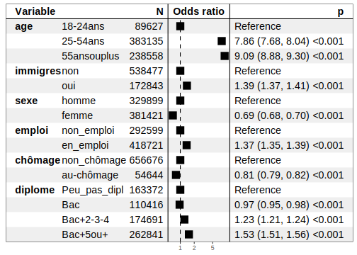
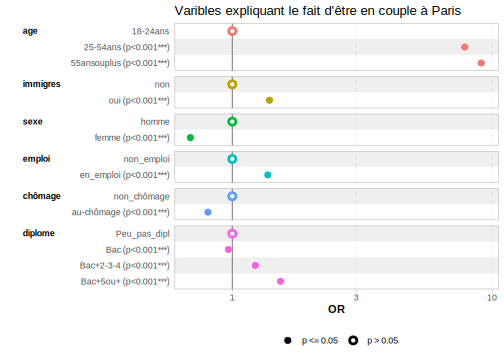
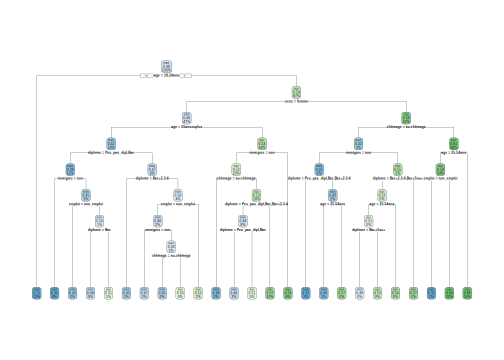

Section 14 Modèles de régression : application sur le RP 2019
On cherche maintenant à expliquer un phénomène ou une variable par rapport à d’autres. On va ici s’intéresser au fait d’être en couple plutôt que de ne pas l’être.
On va repartir de la base RP, en réduisant le champ à Paris et aux 18 ans ou plus.
14.1 La création des bases d’apprentissage et de test
On crée notre base de travail en ne prenant que les variables qui nous intéressent et le champ le plus pertinent pour cette analyse. La fonction relevel() permet d’indiquer la modalité de référence que l’on veut dans les régressions futures, ici pour la régression logistique.
dt_reg <- RP_final %>%
filter(DEPT=="75" & !AGER20 %in% c("2","5", "10", "14","17")) %>%
mutate(age = as.factor(case_when(AGER20 %in% c("19", "24") ~ "18-24ans",
AGER20 %in% c("29","39", "54") ~ "25-54ans",
AGER20 %in% c("64","79", "80") ~ "55ansouplus")),
couple = as.factor(case_when(COUPLE == "1" ~ "oui", TRUE ~ "non")),
couple = relevel(couple, ref="non"),
immigres = as.factor(case_when(IMMI=="1" ~"oui", TRUE ~ "non")),
sexe = as.factor(case_when(SEXE == "1" ~ "homme", TRUE ~ "femme")),
sexe = relevel(sexe, ref="homme"),
emploi = as.factor(case_when(TACT == "11" ~ "en_emploi",
TRUE ~ "non_emploi")),
emploi = relevel(emploi, ref="non_emploi"),
chômage = as.factor(case_when(TACT == "12" ~ "au_chômage",
TRUE ~ "non_chômage")),
chômage = relevel(chômage, ref="non_chômage"),
diplome= as.factor(case_when(DIPL %in% c("01", "02", "03", "11", "12",
"13") ~ "Peu_pas_dipl",
DIPL %in% c("14", "15") ~ "Bac",
DIPL %in% c("16", "17") ~ "Bac+2-3-4",
DIPL %in% c("18", "19") ~ "Bac+5ou+")),
diplome = relevel(diplome, ref="Peu_pas_dipl")) %>%
select(age, couple, immigres, sexe, emploi, chômage, diplome)
# On peut éventuellement étudier en statistiques descriptives les liens entre la
# variable d'intérêt "couple" et les autres variables avec le code suivant :
# dt_reg %>% group_by(couple) %>%
# count(diplome) %>% pivot_wider(names_from = diplome, values_from = "n",
# names_prefix = "diplome_") %>%
# adorn_totals(c("row",'col')) %>% adorn_percentages("col") %>%
# adorn_pct_formatting(digits=2)De manière traditionnelle, dans les modèles de prédiction ou machine learning, on n’applique pas le modèle sur l’ensemble de la base de données mais d’abord sur un échantillon dit d’apprentissage puis on le “teste” sur l’échantillon restant. On va donc ici suivre ce schéma et diviser notre base de données en deux pour avoir un échantillon d’apprentissage ou d’entraînement, et un autre test.
On utilise pour cela la fonction sample (mais d’autres fonctions existent) en lui spécifiant la façon de diviser la base avec l’argument prob= : ici on choisit de diviser notre base selon un rapport 70% vs 30%, autrement dit notre base d’apprentissage comprendra 70% des données de la base initiale, alors que la base de test comprendra les 30% restants. On pourrait procéder à un rapport du type 80% vs 20%, ou 75% vs 25%, etc.
# On choisit la façon de diviser notre base et on l'applique en créant 2 bases
sample <- sample(c(TRUE, FALSE), nrow(dt_reg), replace=TRUE, prob=c(0.70,0.3))
dt_reg_train <- dt_reg[sample, ]
dt_reg_test <- dt_reg[!sample, ]
# On regarde quelle est la taille de nos deux bases
dim(dt_reg_train)[1] 497765 7[1] 213555 7# On vérifie que les proportions de notre variable d'intérêt sont assez proches
# entre les deux bases
dt_reg_train %>% tabyl(couple) %>% adorn_pct_formatting() %>%
adorn_totals("row") %>% gt()| couple | n | percent |
|---|---|---|
| non | 256895 | 51.6% |
| oui | 240870 | 48.4% |
| Total | 497765 | - |
| couple | n | percent |
|---|---|---|
| non | 110040 | 51.5% |
| oui | 103515 | 48.5% |
| Total | 213555 | - |
Les deux bases présentent une répartition couple/non couple très proche : à Paris, environ 48% de la population est en couple.
14.2 Un modèle à visée principale explicative : la régression logistique
La fonction glm du package stats (à installer avant appel dans la librarie) est principalement utilisée pour modéliser différents types de régression : l’argument family=binomial("logit") permet d’utiliser un modèle logit.
14.2.1 Le modèle initial
On crée le modèle en spécifiant la variable d’intérêt puis les variables explicatives ou l’ensemble des variables présentes dans la base si nous avons déjà procédé à une sélection des variables : c’est le cas ici donc c’est pour cela que l’on indique juste un “.” après le “~”, sinon on devrait écrire les variables une par une, ou les sctoker dans une liste et appeler la liste.
Même si ce type modèle doit permettre essentiellement d’expliquer un phénomène, ici être en couple par rapport à ne pas l’être, on peut l’utiliser aussi pour prédire les données. C’est pourquoi nous appliquons d’abord le logit sur la base (réduite) d’apprentissage.
Call:
glm(formula = couple ~ ., family = binomial("logit"), data = dt_reg_train)
Coefficients:
Estimate Std. Error z value Pr(>|z|)
(Intercept) -2.238207 0.015545 -143.981 < 2e-16 ***
age25-54ans 2.058519 0.014127 145.712 < 2e-16 ***
age55ansouplus 2.205362 0.014189 155.430 < 2e-16 ***
immigresoui 0.327726 0.007185 45.614 < 2e-16 ***
sexefemme -0.371729 0.006059 -61.347 < 2e-16 ***
emploien_emploi 0.318353 0.008236 38.656 < 2e-16 ***
chômageau-chômage -0.215653 0.013132 -16.422 < 2e-16 ***
diplomeBac -0.045683 0.010469 -4.364 1.28e-05 ***
diplomeBac+2-3-4 0.207416 0.008971 23.120 < 2e-16 ***
diplomeBac+5ou+ 0.420498 0.008480 49.590 < 2e-16 ***
---
Signif. codes: 0 '***' 0.001 '**' 0.01 '*' 0.05 '.' 0.1 ' ' 1
(Dispersion parameter for binomial family taken to be 1)
Null deviance: 689465 on 497764 degrees of freedom
Residual deviance: 629614 on 497755 degrees of freedom
AIC: 629634
Number of Fisher Scoring iterations: 4Toutes les variables sont significatives.
On va donc l’appliquer maintenant à la base test, en créant des indicateurs mesurant le taux de prédiction ou au contraire d’erreur.
Le modèle predict permet d’abord d’abord de calculer la probabilité d’être en couple pour chaque individu, l’argument type="response" permettant d’appliquer le modèle logistique. Il est plus intéressant d’avoir la probabilité d’une variable de type qualitative, “oui”/“non” comme la variable d’intérêt du modèle, il faut donc procéder à une transformation aboutissant à une nouvelle variable (on considère alors que si la probabilité est strictement supérieure à 0.50 alors cela équivaut à une modalité “oui”). Enfin, on crée une matrice de confusion qui est en réalité un tableau croisé entre les valeurs observées et les prédicitions du modèle ; et on calcule un taux d’erreur en rapportant la somme des éléments hors diagonale principale à la somme des observations totales (de la matrice donc).
# Modèle de prédiction pour récupérer les probabilités individuelles d'être en couple
pred.proba <- predict(logit_1, newdata = dt_reg_test, type="response")
# On transforme les probas en variable qualitative
pred.moda <- factor(case_when(pred.proba>0.5 ~ "oui", TRUE ~ "non"))
# On crée la matrice de confusion
matrice_conf <- table(dt_reg_test$couple, pred.moda)
matrice_conf pred.moda
non oui
non 60318 49722
oui 32131 71384# On calcule le taux d'erreur
tx_erreur <- (matrice_conf[2,1]+matrice_conf[1,2])/sum(matrice_conf)
tx_erreur * 100[1] 38.32877On voit que parmi la modalité observée “non” de la base de données, le modèle prédit 59 825 non soit 55% de cette modalité, c’est la majorité mais cela ne semble pas non plus très élevé ; la prédiction est meilleure si on regarde la modalité “oui”, puisque 71 564 observations, soit 69% de cette modalité, se retrouvent bien en “oui”. Le taux d’erreur de 38% montre bien que le modèle ne prédit pas hyper bien.
Une autre façon de faire est après les deux premières étapes réécrites ici, d’ajouter la variable de prédiction à la table initiale est de créer une nouvelle variable qui indique si on a bien une correspondance entre les modalités des deux variables : l’initiale et celle prédite. Cela nous donnc donc le taux d’erreur calculé au-dessus, on retrouve bien 38,4% de correspondances inexactes.
# Modèle de prédiction pour récupérer les probabilités individuelles d'être en couple
#pred.proba <- predict(logit_1, newdata = dt_reg_test, type="response")
# On transforme les probas en variable qualitative
#pred.moda <- factor(case_when(pred.proba>0.5 ~ "oui", TRUE ~ "non"))
# On ajoute la variable de prédiction dans la table test initiale
dt_reg_test_bis <- cbind.data.frame(dt_reg_test, var_predict=pred.moda)
# et on créer une variable indiquant ou non la correspondance entre
# les modalités des deux variables
dt_reg_test_bis %>%
mutate(predict_OK=as.factor(case_when(couple=="oui" & var_predict=="oui" ~ "oui",
couple=="non" & var_predict=="non" ~ "oui",
TRUE ~ "non"))) %>%
tabyl(predict_OK) %>% adorn_pct_formatting() %>% adorn_totals("row")# A tibble: 3 × 3
predict_OK n percent
<fct> <dbl> <chr>
1 non 81853 38.3%
2 oui 131702 61.7%
3 Total 213555 - 14.2.2 L’évaluation du modèle et la recherche éventuelle d’un “meilleur” modèle
On peut améliorer le modèle en recherchant celui qui est le “meilleur” en faisant une sélection sur les variables, plus précisément en demandant au modèle de choisir les variables les plus explicatives, car peut-être que certaines ne sont pas nécessaires à l’explication du modèle (dans notre cas, nous avons néanmoins vu que toutes les variables étaient significatives donc a priori utiles dans le modèle).
Pour une sélection “pas à pas”, il faut utiliser le package MASS et la fonction stepAIC car c’est à travers le critère AIC (“Akaike Information Criterion”,) que le modèle va chercher à être “meilleur” : plus il sera faible, meilleur il sera. On va d’abord faire cette sélection de façon “descendante” c’est-à-dire en partant du modèle initial “logit_1” ici : on part du modèle avec l’ensemble des variables et on en supprime une au fur et à mesure pour voir si le modèle est “meilleur”.
# install.packages("MASS)
library(MASS)
logit_backward <- stepAIC(logit_1,
scope=list(lower="couple ~ 1",
upper="couple ~ age + immigres + sexe + emploi + chômage +
diplome"),
direction="backward")Start: AIC=629633.9
couple ~ age + immigres + sexe + emploi + chômage + diplome
Df Deviance AIC
<none> 629614 629634
- chômage 1 629885 629903
- emploi 1 631112 631130
- immigres 1 631710 631728
- diplome 3 633114 633128
- sexe 1 633394 633412
- age 2 665926 665942
Call: glm(formula = couple ~ age + immigres + sexe + emploi + chômage +
diplome, family = binomial("logit"), data = dt_reg_train)
Coefficients:
(Intercept) age25-54ans age55ansouplus immigresoui
-2.23821 2.05852 2.20536 0.32773
sexefemme emploien_emploi chômageau-chômage diplomeBac
-0.37173 0.31835 -0.21565 -0.04568
diplomeBac+2-3-4 diplomeBac+5ou+
0.20742 0.42050
Degrees of Freedom: 497764 Total (i.e. Null); 497755 Residual
Null Deviance: 689500
Residual Deviance: 629600 AIC: 629600La sortie n’affiche que le “meilleur” modèle, et c’est donc bien celui qu’on avait mis avec l’ensemble des variables.
Pour une sélection des variables de façon “ascendante”, en partant d’un modèle sans variable puis on ajoute une à une les variables. On utilise la même fonction mais en changeant les paramètres et en créant un modèle “vide” avant :
logit_0 <- glm(couple ~ 1, data=dt_reg_train, family=binomial("logit"))
logit_forward <- stepAIC(logit_0,
scope=list(lower="couple ~ 1",
upper="couple ~ age + immigres + sexe + emploi + chômage + diplome"),
direction="forward")Start: AIC=689534.8
couple ~ 1
Df Deviance AIC
+ age 2 642942 642948
+ diplome 3 678639 678647
+ emploi 1 679583 679587
+ sexe 1 685236 685240
+ immigres 1 687388 687392
+ chômage 1 687893 687897
<none> 689533 689535
Step: AIC=642948
couple ~ age
Df Deviance AIC
+ emploi 1 638621 638629
+ sexe 1 638732 638740
+ diplome 3 638796 638808
+ chômage 1 641243 641251
+ immigres 1 641987 641995
<none> 642942 642948
Step: AIC=638628.6
couple ~ age + emploi
Df Deviance AIC
+ sexe 1 634890 634900
+ diplome 3 635784 635798
+ immigres 1 637363 637373
+ chômage 1 638502 638512
<none> 638621 638629
Step: AIC=634900
couple ~ age + emploi + sexe
Df Deviance AIC
+ diplome 3 632176 632192
+ immigres 1 633584 633596
+ chômage 1 634711 634723
<none> 634890 634900
Step: AIC=632192.4
couple ~ age + emploi + sexe + diplome
Df Deviance AIC
+ immigres 1 630139 630157
+ chômage 1 631990 632008
<none> 632176 632192
Step: AIC=630157.4
couple ~ age + emploi + sexe + diplome + immigres
Df Deviance AIC
+ chômage 1 629873 629893
<none> 630139 630157
Step: AIC=629892.9
couple ~ age + emploi + sexe + diplome + immigres + chômage
Call: glm(formula = couple ~ age + emploi + sexe + diplome + immigres +
chômage, family = binomial("logit"), data = dt_reg_train)
Coefficients:
(Intercept) age25-54ans age55ansouplus emploien_emploi
-2.23212 2.05737 2.20583 0.31617
sexefemme diplomeBac diplomeBac+2-3-4 diplomeBac+5ou+
-0.37080 -0.04229 0.19902 0.41998
immigresoui chômageau-chômage
0.32927 -0.21312
Degrees of Freedom: 497764 Total (i.e. Null); 497755 Residual
Null Deviance: 689500
Residual Deviance: 629900 AIC: 629900Le taux d’AIC diminue à chaque variable ajoutée donc le meilleur modèle est bien celui avec l’ensemble des variables explicatives mises dans le modèle initial.
14.2.3 Le modèle final et l’interprétation des résultats
Finalement, dans une visée plus explicative que prédictive, on peut estimer notre modèle sur l’ensemble de la base et étudier plus précisément les résultats avec les odds-ratios ou rapports des côtes par exemple pour commenter plus directement les coefficients. Ces odds-ratios correspondent à l’exponentiel des coefficients initiaux de la régression. Ils se lisent par rapport à 1 : il est égale à 1 si les deux côtes sont identiques donc s’il n’y a pas de différence de probabilité d’être en couple selon qu’on est une femme ou un homme, il est supérieur à 1 si ici la femme a une probabilité supérieure à celle de l’homme d’être en couple, et il est inférieur à 1 si la femme a une probabilité inférieure à celle de l’homme d’être en couple.
Call:
glm(formula = couple ~ ., family = binomial("logit"), data = dt_reg)
Coefficients:
Estimate Std. Error z value Pr(>|z|)
(Intercept) -2.237347 0.013000 -172.104 < 2e-16 ***
age25-54ans 2.061241 0.011813 174.494 < 2e-16 ***
age55ansouplus 2.206901 0.011861 186.059 < 2e-16 ***
immigresoui 0.329940 0.006011 54.890 < 2e-16 ***
sexefemme -0.371608 0.005069 -73.316 < 2e-16 ***
emploien_emploi 0.314977 0.006891 45.709 < 2e-16 ***
chômageau-chômage -0.215868 0.010977 -19.665 < 2e-16 ***
diplomeBac -0.034625 0.008754 -3.955 7.64e-05 ***
diplomeBac+2-3-4 0.203998 0.007504 27.185 < 2e-16 ***
diplomeBac+5ou+ 0.427777 0.007093 60.313 < 2e-16 ***
---
Signif. codes: 0 '***' 0.001 '**' 0.01 '*' 0.05 '.' 0.1 ' ' 1
(Dispersion parameter for binomial family taken to be 1)
Null deviance: 985384 on 711319 degrees of freedom
Residual deviance: 899777 on 711310 degrees of freedom
AIC: 899797
Number of Fisher Scoring iterations: 4# Résumé des résultats sous forme de tableau avec les odds-ratio
# avec la librairie "questionr" d'abord
#install.packages(questionr)
library(questionr)
odds.ratio(logit_VF)# A tibble: 10 × 4
OR `2.5 %` `97.5 %` p
<dbl> <dbl> <dbl> <dbl>
1 0.107 0.104 0.109 0
2 7.86 7.68 8.04 0
3 9.09 8.88 9.30 0
4 1.39 1.37 1.41 0
5 0.690 0.683 0.697 0
6 1.37 1.35 1.39 0
7 0.806 0.789 0.823 4.29e- 86
8 0.966 0.950 0.983 7.64e- 5
9 1.23 1.21 1.24 9.64e-163
10 1.53 1.51 1.56 0 # puis avec la librarie "forestmodel" pour avoir un meilleur rendu
#install.packages("forestmodel")
library(forestmodel)
forest_model(logit_VF)
# ou encore avec "gt_summary" pour avoir un autre rendu
library(gtsummary)
theme_gtsummary_language("fr", decimal.mark = ",", big.mark=" ")
logit_VF %>%
tbl_regression(exponentiate = TRUE) %>%
add_global_p(keep=TRUE) %>%
modify_header(label ~ "**Variable**") %>%
modify_caption("**Tableau de résultats. Variables expliquant le fait d'être en couple à Paris**")| Variable | OR1 | 95% IC1 | p-valeur |
|---|---|---|---|
| age | <0,001 | ||
| 18-24ans | — | — | |
| 25-54ans | 7,86 | 7,68 – 8,04 | <0,001 |
| 55ansouplus | 9,09 | 8,88 – 9,30 | <0,001 |
| immigres | <0,001 | ||
| non | — | — | |
| oui | 1,39 | 1,37 – 1,41 | <0,001 |
| sexe | <0,001 | ||
| homme | — | — | |
| femme | 0,69 | 0,68 – 0,70 | <0,001 |
| emploi | <0,001 | ||
| non_emploi | — | — | |
| en_emploi | 1,37 | 1,35 – 1,39 | <0,001 |
| chômage | <0,001 | ||
| non_chômage | — | — | |
| au-chômage | 0,81 | 0,79 – 0,82 | <0,001 |
| diplome | <0,001 | ||
| Peu_pas_dipl | — | — | |
| Bac | 0,97 | 0,95 – 0,98 | <0,001 |
| Bac+2-3-4 | 1,23 | 1,21 – 1,24 | <0,001 |
| Bac+5ou+ | 1,53 | 1,51 – 1,56 | <0,001 |
| 1 OR = rapport de cotes, IC = intervalle de confiance | |||
On privilégiera plutôt les deux derniers types de tableaux : ainsi, on note que la probabilité d’être en couple est 7,86 fois plus élevée si on a entre 25 et 54 ans et 9,09 fois plus élevée si on a 55 ans ou plus ; c’est donc l’âge le principal déterminant dans ce modèle du fait d’être en couple. Les autres variables sont néanmoins aussi significatives mais d’un ordre de grandeur moindre : la probabilité d’être en couple est 1,39 fois plus élevée si on est immigré, elle est 1,37 fois plus élevée si on est en emploi, ou encore elle est plus élevée plus on est diplômé au-delà du bac Dit autrement, la probabilité d’être en couple augmente de 39% ((1.39-1)*100) si on est immigré par rapport au fait de ne pas l’être. En revanche, la probabilité d’être en couple est plus faible si on est au chômage de 0.81 fois, autrement dit elle diminue de 19% (1-0.81), elle l’est également si on est une femme (0.69, soit -31%), ou si on a le bac par rapport à ne pas avoir de diplôme (0.97, soit -3%).
On peut aussi vouloir visualiser ces résultats, on peut pour cela utiliser la librarie GGally et la fonction ggcoef_model().
# Résumé des résultats sous forme graphqiue
library(GGally)
ggcoef_model(logit_VF, exponentiate = TRUE) +
ggtitle("Varibles expliquant le fait d'être en couple à Paris")  C’est peut-être le meilleur rendu…
14.3 Un modèle à visée principale prédictive : l’abre de décision
On va procéder à la même analyse en cherchant, cette fois, à prédire si un individu sera en couple ou non à partir des variables sélectionnées précédemment.
On repart donc des deux tables créées et on va utiliser un modèle dit d’apprentissage supervisé, l’abre de décision. Sa construction repose sur un partitionnement récursif des observations qui se fait à partir de noeuds coupés, ces coupures pourront répondre à des règles et des conditions à spécifier ou faire varier pour avoir un meilleur modèle.
Ici on va utiliser un arbre de classification puisque notre variable est qualitative (binaire).
C’est le package rpart qui est spécialisé dans les modèles d’arbres de décision, à installer donc d’abord puis à appeler dans la librairie ; le package rpart.plot permet, lui, d’avoir un arbre plus esthétique et informatif.
14.3.1 Le modèle initial
La spécification du modèle est assez simple, on précise la variable d’intérêt, les éventuelles variables explicatives ou toutes celles qui sont dans la table avec le . (comme précédemment pour le modèle logit), la base de données sur laquelle appliquer le modèle, et dans l’argument method= on spécifie le type de modèle, soit “class” pour une variable d’intérêt qualitative ou binaire, soit “anova” pour une variable d’intérêt quantitative ou continue.
On va d’abord appliquer le modèle sur notre échantillon d’apprentissage ou d’entraînement :
n= 497765
node), split, n, loss, yval, (yprob)
* denotes terminal node
1) root 497765 240870 non (0.5160970 0.4839030)
2) age=18-24ans 62622 6706 non (0.8929130 0.1070870) *
3) age=25-54ans,55ansouplus 435143 200979 oui (0.4618689 0.5381311)
6) sexe=femme 232444 113694 non (0.5108757 0.4891243)
12) age=55ansouplus 95021 39614 non (0.5831027 0.4168973) *
13) age=25-54ans 137423 63343 oui (0.4609345 0.5390655) *
7) sexe=homme 202699 82229 oui (0.4056705 0.5943295)
14) chômage=au-chômage 15861 6672 non (0.5793456 0.4206544) *
15) chômage=non_chômage 186838 73040 oui (0.3909269 0.6090731) *Le modèle nous donne d’abord les résultats en format texte, ce sont des indications sur les différentes “noeuds” puis “branches” de l’arbre, etc. : “node” pour noeud et son numéro, “split” pour la condition de coupure/le critère de décision, “n” pour le nombre total d’observations dans un noeud, “loss” le nombre d’observations qui n’appartient pas à la modalité prédite, “yval” la modalité prédite pour les individus présents à l’étape du noeud, et “yprob” la proportion d’observations pour les individus présents à l’étape du noeud qui prend la valeur prédite en seconde position. Le petit astérix “*” précise que le noeud est une feuille (“terminal”).
Par exemple, ici le premier noeud indiqué “root” représente l’ensemble de l’échantillon (c’est la “racine” de l’arbre), soit 497 765 observations, et comme la modalité prédite est “non”, il y a 51,7% d’observations qui ne sont pas en couple, contre 48% qui le sont soit 240 358 observations (celles qu’on perd à cette étape donc). La première variable discriminante est l’âge : ceux ayant entre 18 et 24 ans forment une première branche et un groupe qui n’est pas en couple, alors que les plus de 25 ans forment l’autre branche et un groupe qui est en couple. Ensuite, pour ce dernier groupe, une autre division se forme selon le sexe : être une femme va former un autre groupe qui ne sera pas en couple, lui-même se divisera encore en deux groupes selon l’âge avec la tranche des 55 ans ou plus qui ne seront pas en couple. Etc.
On peut regarder quelles sont les variables les plus importantes dans le modèle par ordre :
age sexe chômage emploi diplome
22019.5780 2396.8610 1038.0589 720.2897 352.7738 Le diplôme est la variable la plus discriminante, comme on l’avait supposé puisque c’était la première variable qui divisait notre échantillon, ensuite vient le fait d’être une femme ou un homme, etc., et en tout dernier le diplôme.
On va mieux étudier cela avec le résultat visuel.
Pour avoir ainsi graphiquement l’arbre, il faut appeler la fonction rpart.plot() du même package, l’argument “extra” permettant de préciser le type de modèle : “106” pour des modèles en classes avec une variable qualitative et binaire, “104” pour des modèles en classes mais avec une variable d’intérêt qualitative avec plus de 2 modalités, et “100” pour les autres modèles.

# ou avec la librarie `rattle`
# install.packages("rattle")
# library(rattle)
# fancyRpartPlot(arbre_1)Au sommet de l’arbre on a donc la racine (qui est le 1er noeud), puis il se divise en 2 branches pour aboutir à deux autres noeuds, etc.
On voit donc que la branche partant sur la gauche, c’est le cas où la variable d’âge est égale à la modalité “18-24 ans” car on voit le “yes” qui est encadré (et ça sera le cas à chaque fois même si ce n’est pas de nouveau inscrit, autrement dit la branche partant sur la gauche sera la modalité “oui” de la variable).
Il y a chaque fois 3 données indiquées :
- d’abord, la modalité prédite par le modèle lorsqu’on est dans le groupe considéré, par exemple pour la feuille terminale à gauche, donc pour les 18-24 ans, la modalité prédite sera le “non” donc pas en couple, on pourra vérifier dans les données en récupérant la modalité prédite pour chaque observation, pour tous les individus de 18-24 ans la modalité prédite est “non” ;
- ensuite, parmi les individus de ce groupe, donc les 18-24 ans, 11% sont en couple, ;
- et enfin, les 18-24 ans représentent 13% de la population (de notre base d’apprentissage).
Autrement dit, 13% des individus de notre population ont 18-24 ans avec une probabilité d’être en couple de 13%.
L’autre branche indique les individidus qui prennent toutes les autres modalités de la variable, soit les 25 ans ou plus, pour lesquels la modalité prédite sera oui, ils ont 54% à être en couple et la probabilité prédite sera de 87%.
Tout en bas, se trouvent les feuilles de l’arbre, c’est lorsqu’il n’y a plus aucune branche qui part du noeud en question.
Ainsi, 3% de la base (d’apprentissage) sont des individus de plus de 24 ans, hômmes et au chômage, qui ont une probabilité de 42% d’être en couple ; ou encore, 19% de notre population (base d’apprentissage) sont des femmes de 55 ans ou plus et qui ont une probabilité de 42% également d’être en couple.
14.3.2 L’évaluation du modèle
De la même façon que précédemment, on peut vérifier la bonne (ou non) prédiction du modèle en l’appliquant sur l’échantillon dit test, puis en comparant les proportions prédites avec celles effectivement observées dans la base dans la matrice de confusion et enfin en calculant un taux de concordance ou au contraire un taux d’erreur à partir de cette une matrice de confusion :
# Modèle appliqué sur l'échantillon test
predict_test <- predict(arbre_1, dt_reg_test, type="class")
# Comparaison des résultats - Matrice de confusion
mat_confusion <- table(dt_reg_test$couple, predict_test)
mat_confusion predict_test
non oui
non 51720 58320
oui 22410 81105# Taux de concordance : rapport entre la somme des éléments
# de la diagonale principale et la somme des observations
# totales (soit de la matrice)
tx_concordance <- sum(diag(mat_confusion) / sum(mat_confusion))
tx_concordance * 100[1] 62.19709# Taux d'erreur
tx_erreur <- (mat_confusion[2,1] + mat_confusion[1, 2]) / sum(mat_confusion)
tx_erreur * 100[1] 37.80291On peut regarder aussi ce que cela donne sur la base d’apprentissage.
predict_train <- predict(arbre_1, dt_reg_train, type="class")
mat_confusion_1 <- table(dt_reg_train$couple, predict_train)
mat_confusion_1 predict_train
non oui
non 120512 136383
oui 52992 187878tx_erreur_1 <- (mat_confusion_1[2,1] + mat_confusion_1[1, 2]) / sum(mat_confusion_1)
tx_erreur_1 * 100[1] 38.04506Dans les deux cas, les taux d’erreur sont assez élevés, d’environ 38%. Le modèle ne prédit pas hyper bien. On peut noter qu’on a pratiquement le même taux d’erreur que le modèle logit réalisé précédemment…
Vérifions si nous pouvons l’améliorer en modifiant les paramètres de construction de l’arbre, c’est-à-dire en jouant sur les conditions de coupure d’un noeud et sur les règles d’arrêt de ces coupures. On l’effectue avec la fonction rpart.control() avec les arguments suivants (règles d’arrêt principalement) : minsplit= donne le nombre minimum d’observations (individus) présentes à l’étape d’un noeud pour envisager une coupure ; minbucket= qui donne le nombre minimum d’observations/individus présentes à l’étape d’un noeud qu’engendrerait la coupure du noeud parent ; maxdepth qui donne la profondeur de l’arbre ; et cp= qui est un paramètre de complexité (plus il est petit, plus grand est l’arbre de régression).
# Définition des règles de décision
ajust_param <- rpart.control(minsplit = 50, minbucket = 50, maxdepth = 10, cp=0)
# Ajustement du modèle en indiquant le paramètre "control"
arbre_2 <- rpart(couple ~ ., data=dt_reg_train, method="class",
control = ajust_param)
# On étudie de nouveau la matrice de confusion et
# le taux d'erreur associé au nouveau modèle sur la base test
predict_test_1 <- predict(arbre_2, dt_reg_test, type="class")
mat_confusion_ajust <- table(dt_reg_test$couple, predict_test_1)
mat_confusion_ajust predict_test_1
non oui
non 56439 53601
oui 24066 79449tx_erreur_1 <- (mat_confusion_ajust[2,1] + mat_confusion_ajust[1, 2]) / sum(mat_confusion_ajust) *100
tx_erreur_1[1] 36.36862On peut l’appliquer de même à l’échantillon d’apprentissage :
# Modèle appliqué sur l'échantillon test
predict_train <- predict(arbre_2, dt_reg_train, type="class")
# Comparaison des résultats - Matrice de confusion
mat_confusion_ajust1 <- table(dt_reg_train$couple, predict_train)
mat_confusion_ajust1 predict_train
non oui
non 131538 125357
oui 56703 184167# Taux d'erreur
tx_erreur_2 <- (mat_confusion_ajust1[2,1] + mat_confusion_ajust1[1, 2]) / sum(mat_confusion_ajust1)* 100
tx_erreur_2 [1] 36.57549Le taux d’erreur est un peu plus faible, la différence est légère, mais c’est toujours ça de pris !
L’arbre correspondant est le suivant:
 On voit qu’il est bien moins lisible car plus profond, mais il prédit mieux (mais peut-être trop bien - cf. risque de surapprentissage en matching learning).
Vous pouvez réitérer l’exercice en introduisant d’autres variables dans l’analyse, en changeant la variable cible, etc.
Pour aller plus loin, on utilise maintenant beaucoup en analyse prédictive les forêts d’arbre de décision, qui constituent comme son nom l’indique, un ensemble d’arbres de régression, ce qui permet d’avoir un taux d’erreur global moindre, car la principale critique de l’arbre de décision est son potentiel d’erreur.